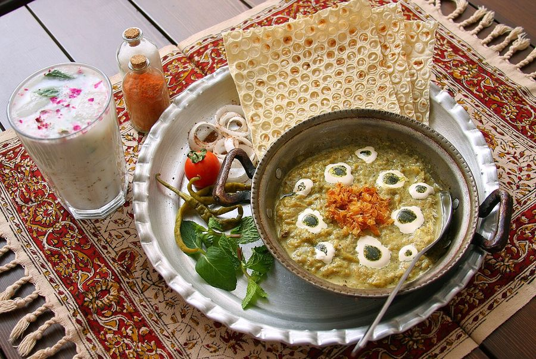
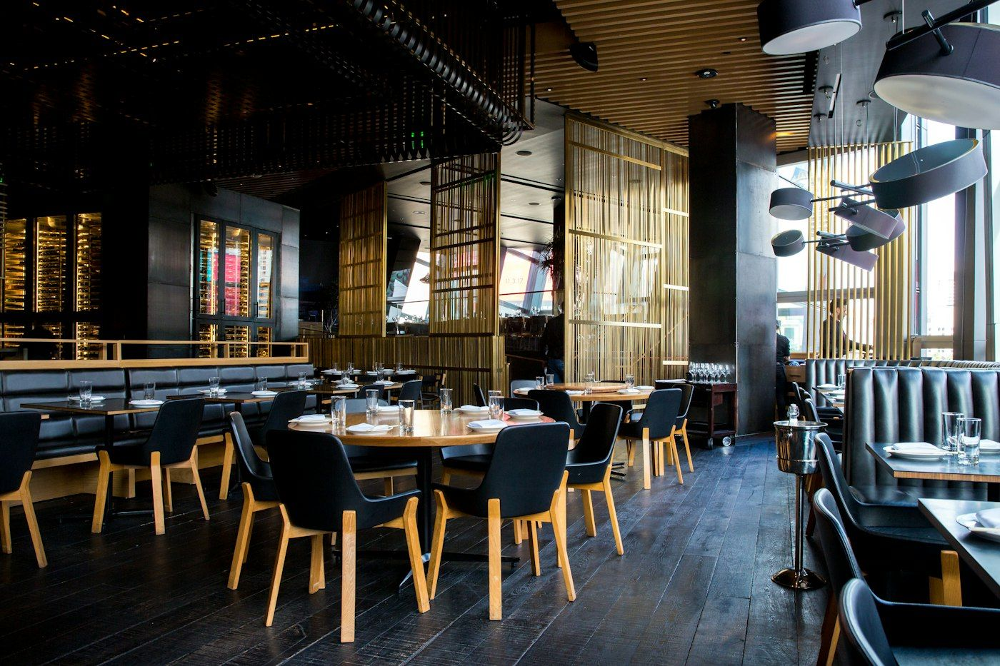
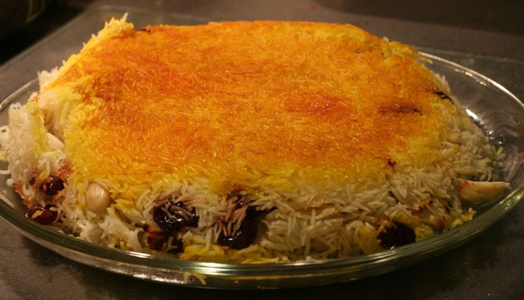
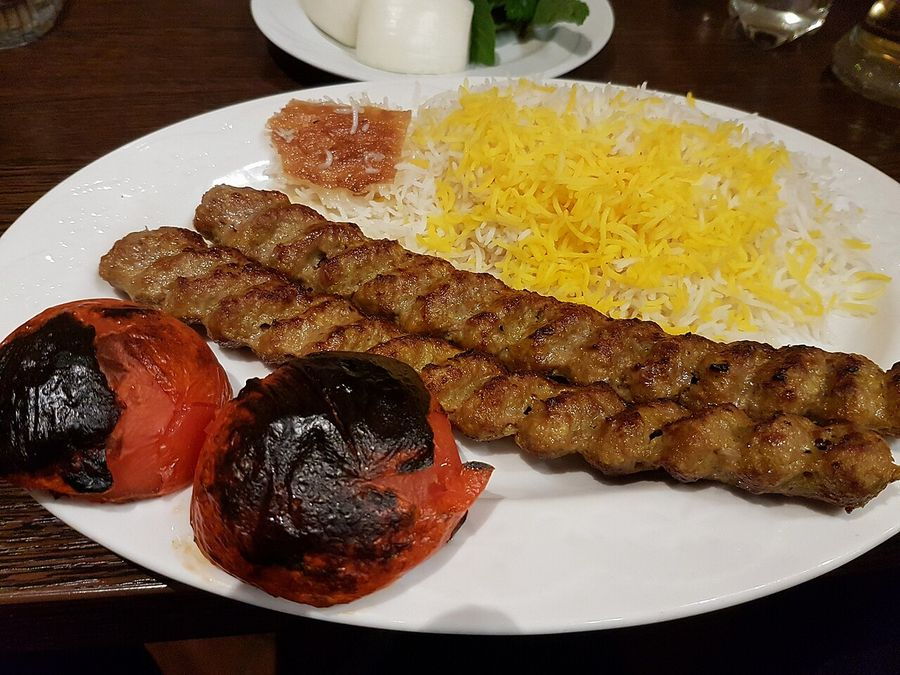
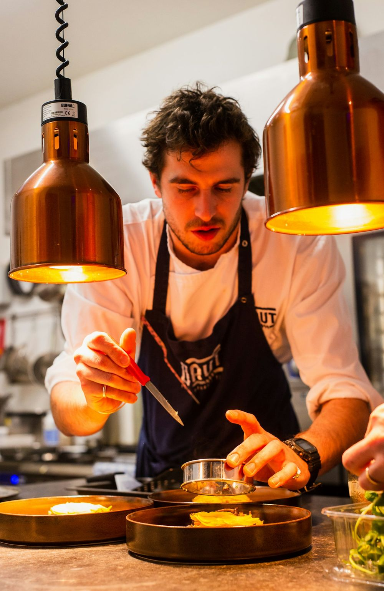

کشک بادمجان
بادمجان کبابی، کشک محلی، نعناداغ، پیاز داغ و گردو؛ با نان سنگک تازه
۲۸۵٬۰۰۰ تومان
الهیه، تهران · از ۱۳۸۸
برنج دودی آستانه، زعفران قائنات، کباب روی ذغال چوب پرتقال و خورشهایی که از صبح روی شعله آرام جا میافتند.

داستان نارون
نارون در خانهای پنجاهساله در الهیه متولد شد؛ خانهای با حوض، کاشیهای فیروزهای و درخت نارونی که سایهاش روی حیاط افتاده. خانواده توکلی سال ۱۳۸۸ این خانه را بازسازی کردند تا غذاهایی را سرو کنند که خودشان با آن بزرگ شدهاند.
هنوز هم سبزی خورش را هر صبح خودمان پاک میکنیم، گوشت را از یک دامدار در دماوند میگیریم و برنج را فقط از یک شالیزار در آستانه اشرفیه.
پیشنهاد سرآشپز

بادمجان کبابی، کشک محلی، نعناداغ، پیاز داغ و گردو؛ با نان سنگک تازه
۲۸۵٬۰۰۰ تومان
تهدیگ زعفرانی ترد با یک کاسه کوچک قیمه
۲۴۵٬۰۰۰ تومان
دو سیخ کوبیده گوسفندی روی ذغال، برنج آستانه، گوجه کبابی و کره
۶۹۰٬۰۰۰ تومان
ران مرغ بدون استخوان در زعفران و لیمو، با برنج و سالاد شیرازی
۶۲۰٬۰۰۰ تومان
ماهیچه گوسفندی هشت ساعت پخت، شوید تازه و باقالی
۹۴۰٬۰۰۰ تومان
مرغ محلی، گردوی تازه آسیابشده و رب انار ساوه؛ ملس و جاافتاده
۷۲۰٬۰۰۰ تومانسرآشپز
«غذای ایرانی عجله را نمیبخشد. قورمهسبزی خوب شش ساعت وقت میخواهد و هیچ میانبری ندارد.»
کاوه آشپزی را در آشپزخانه مادربزرگش در رشت یاد گرفت و بعد سالها در رستورانهای استانبول و دبی کار کرد. او در نارون غذاهای کلاسیک را دست نمیزند؛ فقط مواد بهتر و دقت بیشتری به آنها اضافه میکند.

سالن اصلی، کنار حوض در حیاط یا شاهنشین خصوصی برای جمعهای بزرگتر.
رزرو آنلاینسفارش آنلاین برای تحویل حضوری یا ارسال با پیک در محدوده شمال تهران.
سفارش از منوروی هر میز یک کد QR است؛ منو را بدون تماس و همیشه بهروز روی گوشی ببینید.
نسخه چاپی QR